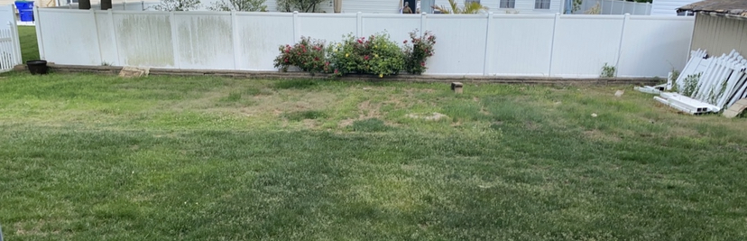
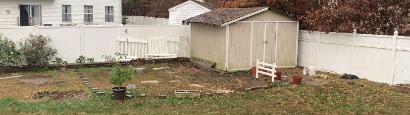
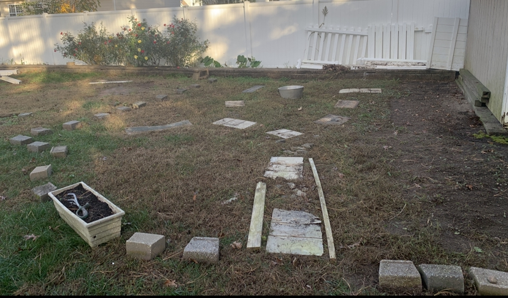
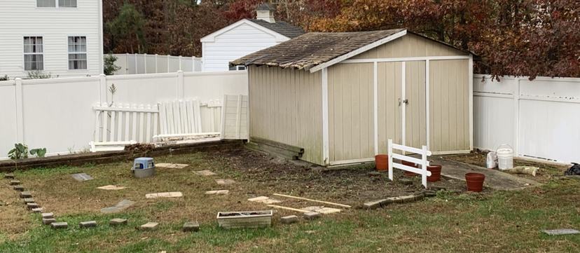
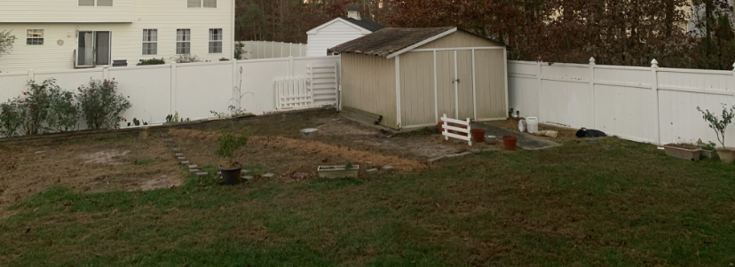
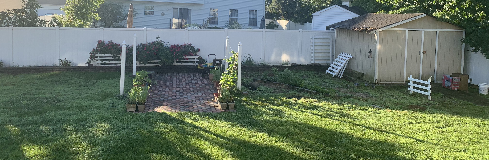
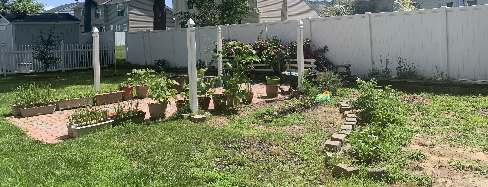
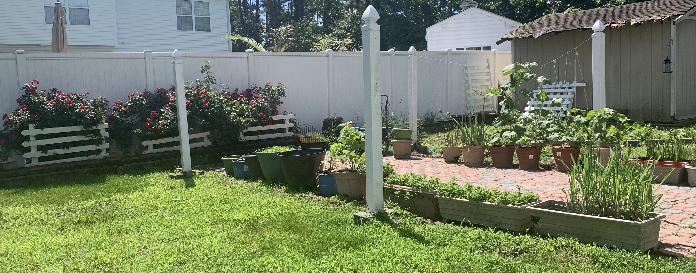

As an empty-nester, my mom had started to dabble in growing potted vegetables. I had started to volunteer at community gardens during my time in NYC, and used the pandemic as an opportunity so see if my mom would be interested in developing her modest garden a little more.
She was reluctant to take on a larger project than she could handle, because I would leave once the lockdowns eased; and it was a great experience to work with her to figure out how big of a footprint she wanted to manage.
I used the lockdown time to observe and map sun path; note local insect and plant ecology in the nearby woods; and research suitable vegetable, fruit, and ecologicall benefical plantings. Along with edible plants, my mom really likes growing roses.
Below are photos of each stage of design + implementation process, along with a few notes and thoughts at each stage.







